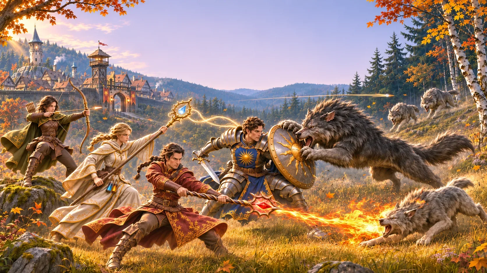

A forest town at the edge of a wood that has grown bold.
Destiny of Valendhar is a fantasy online MMO, played by many players at the same time, with tab-target combat and four job guilds. This site shows its vertical slice, not the full game: from the Rune Portal through Hayn and the Wolfwood to the Saxenhausen Watchtower above Frankfurt.
Every blade, bow and spell is needed
You arrive as a stranger at the Rune Portal, an old floating stone on the road outside Hayn, a walled town in the king's forest of Three-Oaks, at the edge of the Wolfwood.
Captain Roland is short of people and the pack has started coming out of the trees. You choose your first job at one of four guilds, learn to fight and gather, thin out the wolves, gear up at the forge and finally face the Alpha in its den. Then the road north opens: a merchant to protect, an ambush to survive, a dungeon under the hill, and at the end the Saxenhausen Watchtower, with Frankfurt below.
Read the full overview- Genre
- Third-person fantasy online MMO
- Combat
- Tab-target, hotbar, group roles
- Jobs
- Paladin, Ranger, White Mage, Elementalist: switch between them, level each on its own
- Your character
- One of eight heroes, four women and four men, chosen in the character creator; different races to choose from later
- Players
- Many players at the same time, online in one world
- Vertical slice
- A small finished part of the MMO, not the full game
- Look
- Grounded, semi-realistic fantasy
- Engine
- Unreal Engine 5
- Game framework used
- Vertical Third
Four guilds, one town
All four jobs and their abilities


What shapes the adventure

A town that feels lived in
Half-timbered houses, chimney smoke and firewood under every eave. Hayn is a real place with real work going on.

Four guilds, four jobs
Paladin, Ranger, White Mage and Elementalist. Each guild has its own building, banner, trainer and training ground, and one character can learn them all.

Fights you can read
Tab-target combat with a hotbar of abilities. Every special attack shows on the ground before it lands.

A forest that grows older
The Wolfwood is built in rings. The deeper you go, the darker the trees and the bolder the wolves.

The road goes on
Guard a merchant's cart, survive an ambush, clear a dungeon under the hill and reach the Saxenhausen Watchtower above Frankfurt.

The world
Hayn guards the road
Behind an oval stone wall stand steep-roofed half-timbered houses, a market square with a sandstone fountain, a forge, an inn called the Golden Acorn and a town hall with a slate bell turret. The town lives on timber, and it keeps watch over the road north to Frankfurt, the capital.
North and west the Wolfwood begins: birch and hazel at the edge, tall beeches and old oaks further in, and dark spruce where the wolf den is.
Walk through Hayn


The vertical slice
From the Rune Portal to the Saxenhausen Watchtower
Eleven stops on one road. Each one teaches something new, from the first step to a boss fight and a dungeon.

- Act 0The Rune Portal“The stone hums. The road leads north.”
- Act 1The Watch House“Captain Roland has a task, and not enough people.”
- Act 2Choose your path“Steel, bow, spring water or flame.”
- Act 3The training grounds“The dummy does not hit back. Yet.”
- Act 4The forest edge“Silverleaf grows where the birches thin out.”
- Act 5The pack“Grey shapes between the beeches.”
- Act 6Town life“Pelts for iron, iron for bracers.”
- Act 7The Alpha“Bigger than the stories said.”
- Act 8The road to Frankfurt“One merchant's cart, and one already overturned.”
- Act 9Beneath the hill“Old stone, and something older behind it.”
- Act 10The Saxenhausen Watchtower“Frankfurt below, and the end of the vertical slice.”
A notice in the Watch House
Pinned beside the map of the region
“Three sheep at the mill, a woodcutter's dog, and now tracks inside the north pasture. The pack has never come this close. Anyone who can hold a weapon, report to me.”
Captain Roland